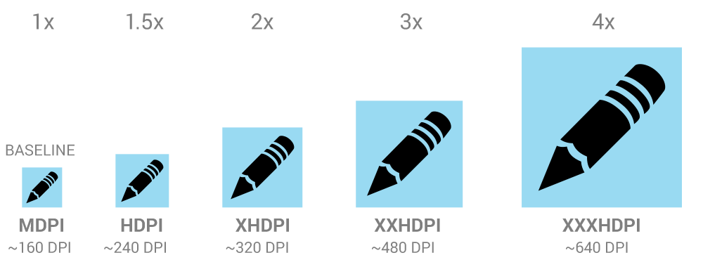

Иконка - это графическое изображение, которое занимает небольшую часть экрана и обеспечивает быстрый, интуитивно понятное представление действия, статуса, или приложения.
При проектировании иконки для вашего приложения, важно иметь в виду, что ваше приложение может быть установлено на различных устройствах, которые предлагают диапазон плотностей пикселей, как описано в разделе Устройства и дисплеи. Но вы можете заставить ваши иконки отлично смотреться на всех устройствах, предоставляя каждый значок в нескольких размерах. Когда ваше приложение работает, Android проверяет характеристики экрана устройства и загружает ресурсы для вашего приложения соответствующие плотности экрана.
Т.к. вы будете поставлять каждый значок в нескольких размерах, чтобы поддержать различные плотности, руководство дизайна приведенное ниже опирается на размеры иконок в независимых от плотности пикселях ( dp ), которые основаны на размерах в пикселях экрана средней плотности (MDPI).

Таким образом, чтобы создать иконку для различных плотностей, вы должны следовать отношению масштабирования 2:3:4:6:8 между пятью главными плотностями (medium, high, x-high, xx-high, и xxx-high соответственно). Например, предположим, что размер для значка запуска должен быть 48x48 dp. Это означает, что базовой плотности (MDPI) размер будет 48x48 px (пикселей), и высокой плотности (HDPI) размер должен быть 1.5x от базового - 72x72 точек, и x-high плотности (XHDPI) размер должен быть 2x от базового - 96x96 точек, и т.д..
Примечание: Android также поддерживает экраны низкой плотности (LDPI), но вам обычно не нужно создавать собственные наборы для таких размеров, потому что Android эффективно уменьшает ресурсы HDPI на 1/2, чтобы соответствовать ожидаемому размеру.
И напоследок, вот ряд размеров иконок в пикселях, для иконок запуска (Launcher Icons):